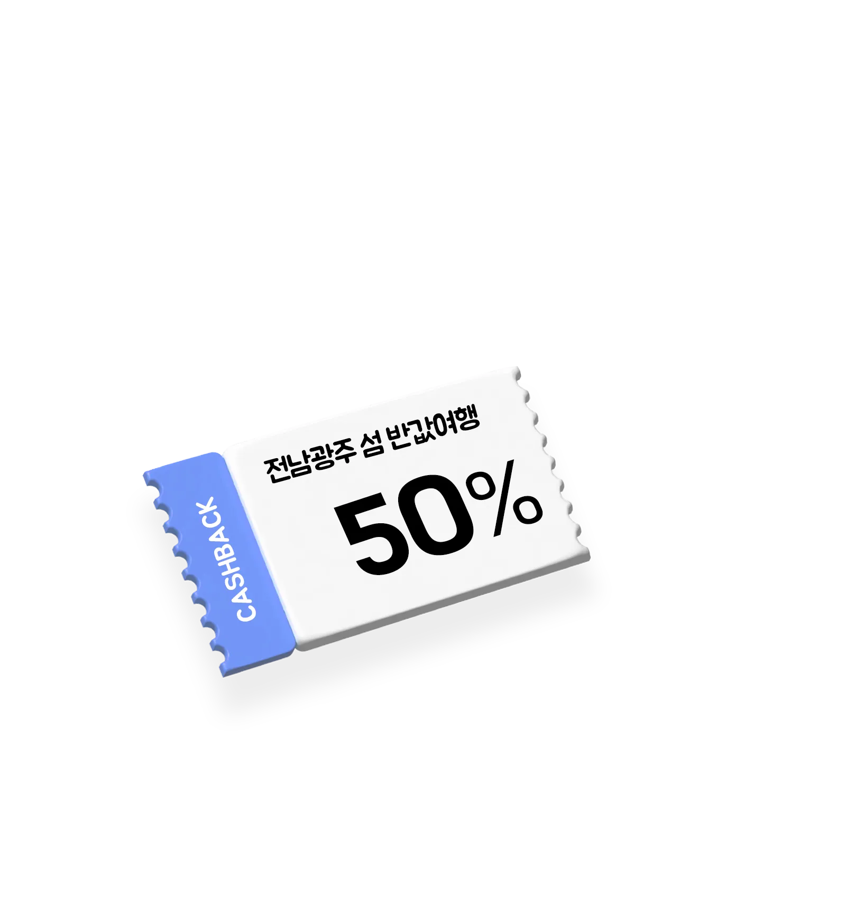
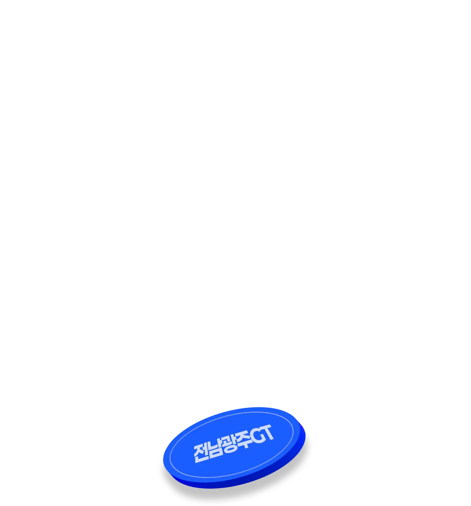
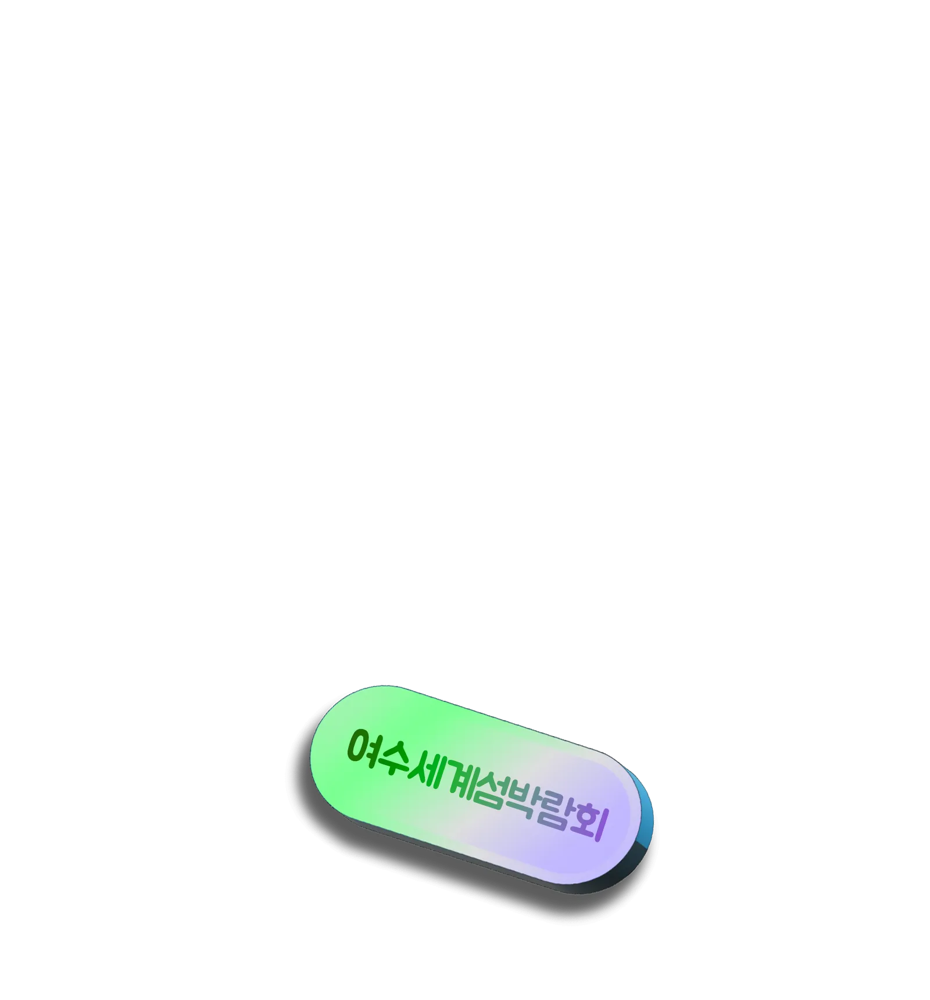

가을처럼 풍성한
이번 주 꿀정보
9월은 축제의 계절, 전남광주로 오세요!

광주비엔날레&
여수세계섬박람회
9월 5일 동시에 스타트
전남광주통합특별시의 대형 국제행사인 제16회 광주비엔날레와 2026 여수세계섬박람회가 동시에 개막했습니다. 섬박람회와 광주비엔날레를 더 즐겁게, 폭넓게 만나는 방법을 지금 확인해 보세요!
- 개막
- 연계 혜택
-
- 관람객을 위한 맞춤형 교통 편의
- 숙박할인페스타로 숙박 할인 혜택 제공
- 주요 관광지 방문 인증샷 이벤트
- 섬박람회&비엔날레 연계 체류형 상품
- 양림동 역사/예술 투어 운영
- 광주 맛집 50여 곳 할인 주간 등
이순신 장군의
승리를 기억하며!
2026 명량대첩 축제 개최
이순신 장군이 이끄는 조선 수군이 울돌목에서 일본 수군을 상대로 승리를 거두었던 명량대첩을 2026년에 만나보세요. 진도와 해남 울돌목 일원에서 2026 명량대첩 축제가 열립니다.
올해 축제는 개막식과 주제공연, 대규모 출정 퍼레이드, 해상 퍼레이드, 축하공연 등 역사와 문화가 어우러진 다양한 프로그램을 준비 중인데요. 특히 약 1천 200명이 참여하는 대규모 출정 퍼레이드는 명량대첩의 하이라이트가 될 예정이에요.
- 기간
- ~
- 장소
- 울돌목 일원(해남군 우수영관광지,
진도군 녹진관광지) - 프로그램
- 개막식, 주제공연, 대규모 출정 퍼레이드, 해상 퍼레이드, 축하공연 등
가을을 여는
스피드 축제
‘전남광주GT’에서
스피드를 즐겨요
국내 최대 규모의 모터스포츠 축제인 전남GT가 ‘전남광주GT’로 명칭을 바꾸고 오는 12일부터 축제를 시작해요.
2026 전남광주GT 대회엔 대표 종목인 ‘전남내구’를 포함해 7개 종목 150여 대가 참여할 예정인데요. 가상레이싱, 카트체험, 미니카경주, 버블쇼 등 다양한 체험 프로그램도 함께 즐겨 보세요.
- 기간
- ~
- 장소
- 영암 국제자동차경주장
- 종목
- ‘전남내구’, ‘토요타 가주 레이싱 6000’, ‘프로토타입 & TC2000’, ‘프리우스 PHEV’, ‘알핀’, ‘스포츠바이크400’, ‘짐카나’ 7개 종목
- 체험
- 가상레이싱, 카트체험, 미니카경주, 버블쇼 등
공공기관 이전
12주년을 축하합니다
빛가람 페스티벌에서 만나요
나주 빛가람혁신도시에서 공공기관 이전 12주년을 기념해 임직원과 지역주민이 함께 어울리고 소통하는 ‘빛가람 페스티벌’이 열려요.
올해는 무대공연 중심에서 벗어나 이전 공공기관이 직접 참여하는 특강, 체험, 문화 프로그램이 혁신도시 곳곳에서 운영되는 것이 특징! 먹거리장터 7개소와 푸드트럭 5대가 참여하는 푸드존, 지역주민 중심의 20개 업체가 참여하는 플리마켓까지 몽땅 즐겨보세요.
- 기간
- ~
- 장소
- 빛가람 호수공원
- 즐길거리
-
- 푸드존: 먹거리장터 7개소, 푸드트럭 5대
- 플리마켓: 지역주민 중심 20개 업체 참여
장르의 경계를 허문
전남광주 예술의전당
‘그라제’ 개최
예술로 하나 되는 화합의 장 ‘그라제’가 열립니다. 이번 그라제는 뮤지컬·오페라·국악·클래식·발레·대중음악 등 전 세대를 아우르는 13개 프로그램을 준비했는데요. 대극장과 소극장, 잔디광장까지 아우르며 펼쳐지는 경계 없는 문화예술축제 ‘그라제’의 매력에 푹 빠져보세요.
- 기간
- ~
- 장소
- 전남광주통합특별시 예술의전당
- 구성
- 뮤지컬·오페라·국악·클래식·발레·대중음악 등 13개 프로그램
남도의 통 큰 혜택,
전국 최초 섬 반값여행
본격 스타트!
섬 관광경비의 50%를 돌려주는 ‘전남광주 섬 반값여행’이 순항 중이에요. 숙박, 음식, 체험 등 관광경비 아끼지 마세요. 사용금액의 50%를 1인 최대 10만원까지 모바일 지역화폐로 돌려드리니까요.
- 대상
- 관외 거주 관광객
- 환급
- 숙박‧음식‧체험 등 사용금액의 50%,
1인 최대 10만원(모바일 지역화폐) - 대상 섬
- 8개 시군 16개 섬
- 목포 달리도·외달도
- 여수 하화도·사도·거문도·개도·금오도
- 고흥 쑥섬·연홍도
- 보성 장도, 강진 가우도, 영광 송이도, 진도 관매도
- 신안 흑산도·반월도·박지도·증도

전남 섬 여객선도
반값으로 쏩니다
관광객의 섬 여행 비용 부담을 낮춰 드리는 ‘일반인 섬 여객선 반값 운임지원 사업’ 대상 항로가 6개 시군 15개 항로 34개 섬으로 대폭 확대됩니다.
특히 섬박람회를 개최 중인 여수의 지원 항로가 대폭 확대되었는데요. 전남광주통합특별시의 아름다운 섬을 여객선비 부담 없이 만나보세요.
- 대상 항로
- 6개 시군 15개 항로 34개 섬
- 유의사항
- 시군별 현지 여건과 예산에 따라 주말·공휴일·평일 등 적용 시기가 달라질 수 있으므로 방문 전 해당 시군 담당부서에 확인하세요. ※ 지원은 여객선 운임에 한정, 터미널 이용료와 차량 운임 지원X
- 문의
-
- 여수시 061-659-3998
- 고흥군 061-830-5315
- 완도군 061-550-5132
- 신안군 061-240-8164
- 해남군 061-530-5673
- 진도군 061-540-6454

남도한바퀴 타고
전남광주 가을여행 즐기세요
가을 여행철을 맞아 지역 주요 관광지를 잇는 관광지 순환버스 ‘남도한바퀴’ 가을여행 16개 코스를 선보입니다. 남도한바퀴는 최저 1만 2천900원으로 코스별 3~5개 관광명소와 미식, 문화체험 콘텐츠를 둘러보는 전남광주의 대표 관광상품이에요.
이번 가을엔 단풍놀이, 숲과 정원, 문화예술, 미식 등 남도의 가을을 즐길 수 있는 16개 코스를 구성했는데요. 광주권 관광명소의 경우 코스가 새롭게 추가된 것이 특징이에요. 여수세계섬박람회와 광주비엔날레를 연계한 특별코스도 준비했으니 올해는 남도한바퀴 타고 전남광주의 매력을 확실하게 느껴보세요.
- 요금
- 최저 1만 2천900원 부터(코스별 차등)
- 코스
- 단풍놀이, 숲과 정원, 문화예술, 미식 등 16개 코스
- 특징
-
- 광주권 관광명소 코스 신규 추가
- 여수세계섬박람회·광주비엔날레 연계 특별코스 운영
- 예약
- 남도한바퀴 누리집(온라인)
또는 콜센터 062-360-8502 ※ 콜센터 운영 09:00~17:00

문화누리카드로 섬박람회
편하게 이용하세요
전남광주통합특별시가 여수세계섬박람회 입장권 판매처와 행사장 식음료, 기념품 판매부스 등 40여 곳에 문화누리카드 가맹점 등록 절차를 진행했습니다.
가맹점 등록이 완료되면 문화누리카드 이용자는 박람회 입장권과 등록된 행사장 판매부스에서 먹거리와 기념품 등을 카드로 구매할 수 있는데요. 앞으로 섬박람회뿐만 아니라 다양한 지역 축제에서 사용 가능하도록 가맹점 등록을 넓혀갈 예정이에요.
- 대상
- 문화누리카드 이용자
- 사용처
-
- 여수세계섬박람회 입장권 판매처
- 행사장 식음료·기념품 판매부스 등 40여 곳
- 향후
- 다양한 지역 축제로 가맹점 등록 확대 예정

우리 동네 자랑하세요
주민자치 우수사례 공모전
2026 주민자치 우수사례 공모전에 참여할 지역 우수사례를 발굴합니다. 무려 특별교부세 지원 규모가 총 20억원! 자랑하고 싶은 주민자치 성과가 있다면 지금 도전하세요.
- 분야
- 주민자치 실현, 지역 문제 해결, 공동체 활성화
- 대상
- 2025년 1월부터 2026년 8월까지 추진한 주민자치 활동
- 접수기간
- 까지(취합 후 행안부 제출 예정)

제조업 우수 기술인을
찾습니다
지역 제조업 현장에서 활약하는 우수 기술인을 예우하기 위한 ‘2026 전남광주통합특별시 기술장’을 선정합니다. 선정된 기술장에게는 기술장패 수여와 3년간 분기마다 50만원씩 총 600만원의 장려금을 드려요.
- 자격요건
- 아래를 모두 충족하고 공적이 뛰어난 기술인이 대상
- 공고일 현재 관내 구(5개 자치구) 소재 중소 제조업체에서 10년 이상 계속 근무
- 신기술 개발·품질관리 활성화 제안실적 우수, 또는 공정개선을 통한 생산성 향상·불량률 저감 공적
- 같은 공적으로 수상한 적 없음, 또는 수상 후 10년 경과
- 신청기간
- ~
- 신청방법
- 광주청사 창업진흥과 방문 또는 우편